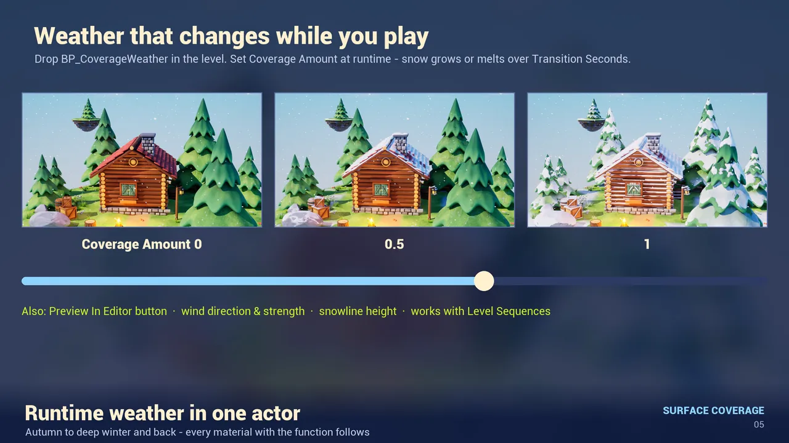
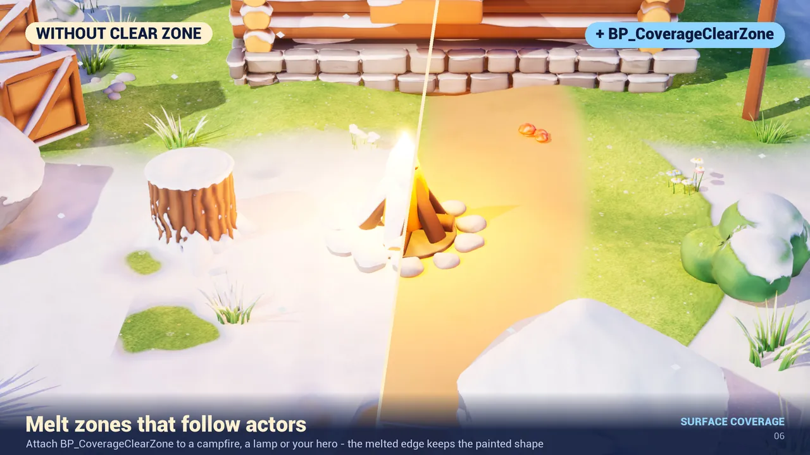
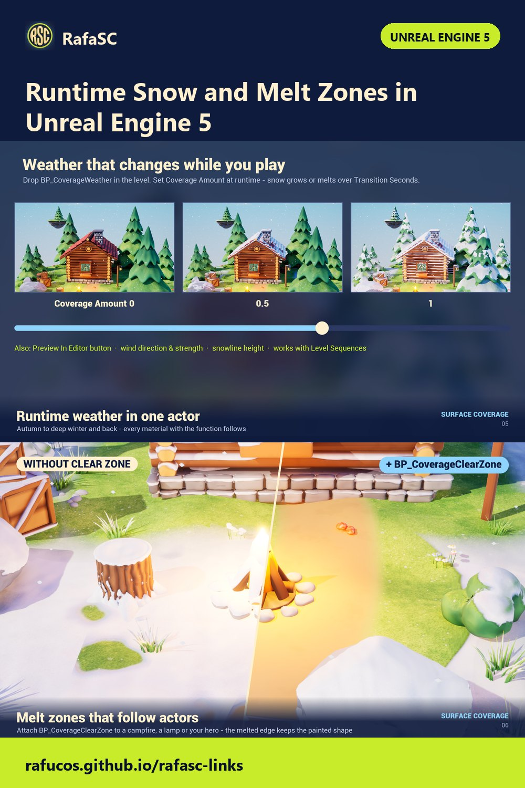

Snow and moss
Runtime snow in Unreal Engine 5: weather that changes and melt zones
Runtime snow in Unreal Engine 5 is one global number that every snow material reads: raise it and winter arrives, lower it and the snow melts. Put that number in a Material Parameter Collection and any Blueprint can drive it. A second parameter with a position and a radius gives you melt zones around a campfire or the player.
By RafaSC, 3D and technical artist · Updated · 5 min read

One number for the whole level
A Material Parameter Collection (MPC) is a set of values that many materials can read at once. If every snow material multiplies its amount by the same MPC value, changing that value changes the whole level, with no loop over actors and no material instances to update.
In Surface Coverage that collection is MPC_Coverage. From any Blueprint or weather system: Set Scalar Parameter Value, Collection MPC_Coverage, Parameter Global Amount, value 0 to 1.
| Parameter | Use |
|---|---|
| Enabled | 0 turns coverage off everywhere |
| Global Amount | Multiplies every material's Amount |
| Wind Direction and Wind Strength | Tilt the direction of the coverage in every material |
| Height Offset | Moves every snowline at once |
| Clear Zone A and B | xyz is the centre, w is the radius in cm. 0 is off |
| Clear Zone Softness | Width of the melted edge, in cm |
Weather without writing the Blueprint

- Drag
Blueprints/BP_CoverageWeatherinto the level. One per level. - Coverage Amount from 0 to 1 is the weather. Change it at runtime with a Set node, a trigger or a Level Sequence (it is exposed to cinematics), and the level moves there over Transition Seconds.
- Wind Direction and Wind Strength tilt where the snow lands. Height Offset moves every snowline.
- Click Preview In Editor in the Details panel to see it without pressing Play.
Melt zones around a fire or the player

- Drag
Blueprints/BP_CoverageClearZoneinto the level, or attach it to an actor so it follows that actor. - Radius, in centimetres, is melted clean, with the same painted edge as the rest of the coverage.
- Set Zone Parameter to
Clear Zone AorClear Zone B. Two zones can be active at once. - The zone switches off when the actor is destroyed or play ends.
Recipes
| What you want | Settings |
|---|---|
| Winter arrives while you play | BP_CoverageWeather, Transition Seconds 30, set Coverage Amount from 0 to 1 |
| A campfire keeps its circle clean | BP_CoverageClearZone attached to the fire, Radius 170 |
| Mountain snowline | Height Bias 1, Height Start at the altitude you want, Height Fade 300 to 800 |
| Moss on one side | Moss preset, Direction (0, 1, 0.35) |
| Dusty storage room | Dust preset, Layer Opacity 0.85, Shelter Amount 0 because it is indoors |
When it does nothing
- Nothing is covered: is Amount above 0? Are
Enabled1 andGlobal Amountabove 0 in the MPC? Is there a BP_CoverageWeather in the level with Coverage Amount 0? - The melt zone does nothing: Zone Parameter must be exactly
Clear Zone AorClear Zone B, and Radius must be above 0. - Parameters do not show in the instance: the function must be connected to the outputs and the material saved.
The Blueprints only write to the Material Parameter Collection. There is no tick inside the material. How the snow itself is placed is in snow or moss on top of any mesh.
Frequently asked questions
How do I change snow amount at runtime in Unreal Engine 5?
Drive one value in a Material Parameter Collection that all snow materials read. With Surface Coverage: Set Scalar Parameter Value on MPC_Coverage, parameter Global Amount, from 0 to 1. Or place BP_CoverageWeather and set Coverage Amount.
Can snow melt around a campfire or the player?
Yes. Attach BP_CoverageClearZone to that actor and set Radius. Two zones can be active at once.
Can I animate the snow in Sequencer?
Yes. Coverage Amount on BP_CoverageWeather is exposed to cinematics, so a Level Sequence can change it.
Does runtime weather cost performance?
The Blueprints only write a Material Parameter Collection. There is no tick in the material.
Related guides

Save this guide for later. Product used on this page: Stylized Snow & Moss Coverage.